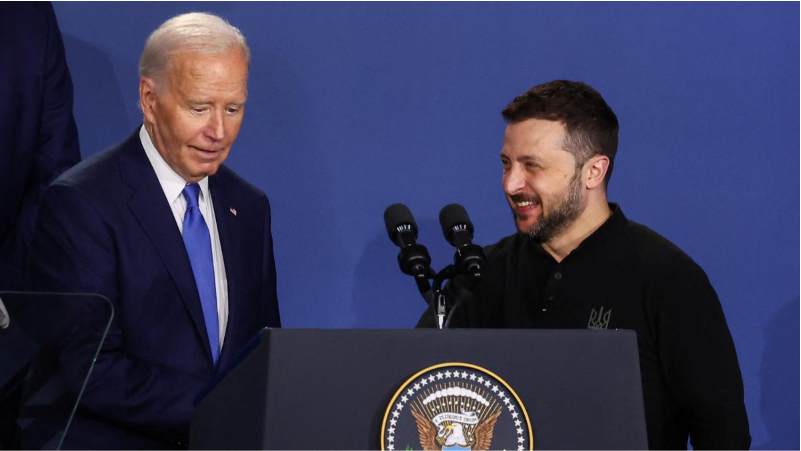
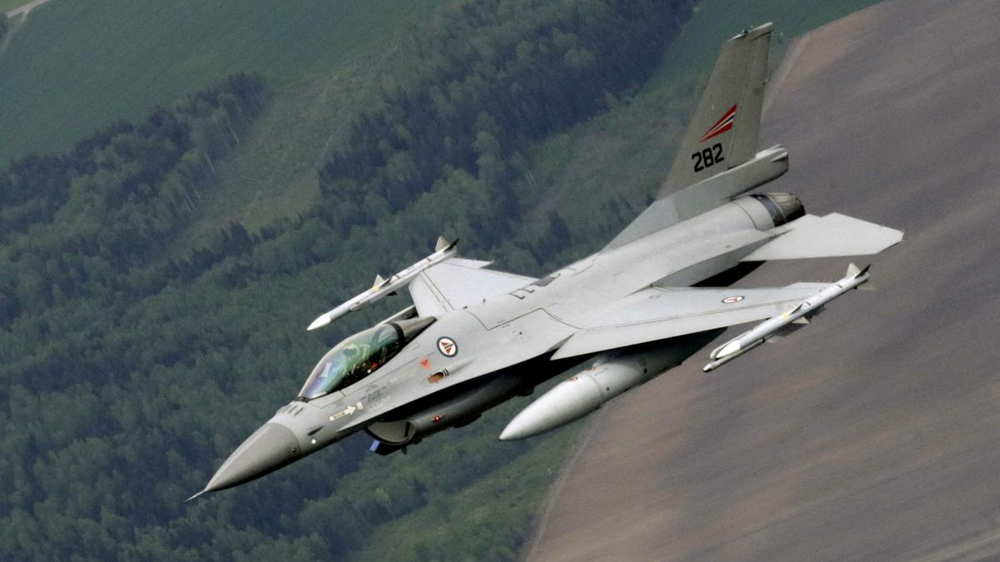
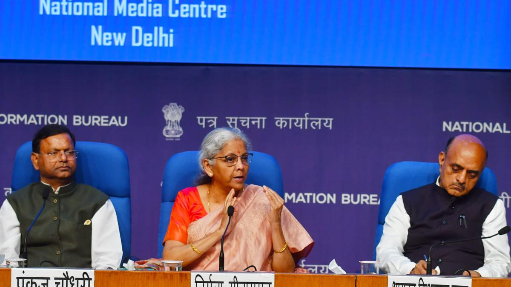
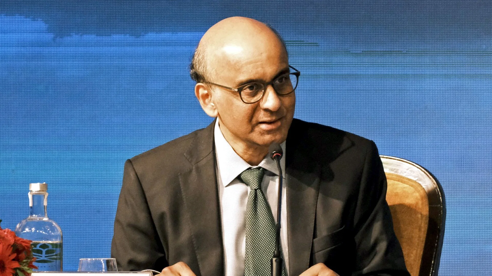
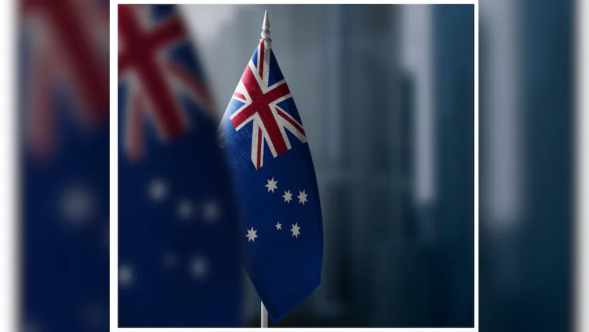

Clean slate
Change came to the UK on Friday in the form of a Labour landslide under 61-year-old Keir Starmer’s (pic) leadership.
The Opposition party that was said to be in tatters, needing “at least 10 years to fix”, swept the polls with 410 of the 650 seats in the House of Commons.
It’s the biggest majority in the British Parliament since at least 1997.
Just five years ago, Labour had suffered its worst defeat in a century.
This time, former PM Rishi Sunak’s Conservatives (Tories) have been routed with 118 seats after 14 years in office.
Labours ahead
The landslide means a happy weekend for Labour, but they have serious work ahead.
The country’s electorate is impatient for change against a gloomy backdrop of economic malaise, mounting distrust in institutions and a fraying social fabric.
In fact, economic troubles led the Tories to the slaughter this time.
Sunak safe
Sunak, who resigned on Friday, kept his Richmond and Northallerton seat comfortably with 47.5% of the vote, but Tory colleague and Britain’s shortest-serving PM Liz Truss lost her seat in Parliament.
Sunak accepted the responsibility for his party’s loss and said voters had delivered a “sobering verdict”.
In a post on X Indian PM Narendra Modi thanked Sunak for deepening ties with India.
‘Decent public-spirited man’
Sunak described PM-elect Starmer, a human rights barrister, as a “decent public-spirited man”.
PM Modi congratulated Starmer on social media and said, “I look forward to our positive and constructive collaboration to further strengthen the India-UK Comprehensive Strategic Partnership.”
Starmer also said he wants a “new strategic partnership” with India.
Hunt on for Baba and his chief aide; Rahul reaches Hathras
Look out
Uttar Pradesh government agencies have launched intensive searches across the state and in neighbouring Rajasthan and Haryana to trace Hathras stampede key accused Devprakash Madhukar.
A senior government official told PTI that they are also looking for preacher Surajpal (alias Narayan Sakar Hari / Bhole Baba) for questioning in the case.
Crackdown
While Madhukar, the ‘mukhya sevadar’ (chief organiser of the satsang), is the only named accused in the FIR, Bhole Baba was not mentioned as accused.
Besides Madhukar, “several unidentified organisers” were also booked in the case, lodged at the Sikandra Rao Police Station and six suspects have been arrested so far.
“No one has been given a clean chit. The investigation is on and government agencies are searching for the main accused and the preacher to question them,” the official told PTI.
What we know so far
The stampede occurred after Bhole Baba left the event venue as his devotees rushed to collect the dirt around his feet.
The administration has alleged that 2.5 lakh people congregated at the venue against the permitted limit of 80,000.
Locals say his team members triggered the stampede by not allowing the followers to leave even when they complained of suffocation.
Some of them claim they were pushed and beaten when they asked for help.
Police say the Baba is not in the ashram.
To console
Leader of Opposition in Lok Sabha Rahul Gandhi met the families of victims who lost their lives in the stampede.
“A lot of families have been affected and many people have died. I don't want to politicise this. There have been deficiencies in the system. I think they should get more compensation as these are very poor families. I request the CM of UP to provide compensation open-heartedly. They need it now, more compensation should be given as soon as possible. The family members said that the police arrangement was not enough,” he said.
Rahul was accompanied by state Congress chief Ajay Rai, state Congress in-charge Avinash Pande, party spokesperson Supriya Shrinate and other office bearers during the visit.
Joe Biden's defiant press conference falls flat as he introduces Ukraine President Zelensky as ‘President Putin’

Mr. Biden made clear he supported Ms. Harris — who as vice president would take over from him in the event of an emergency, but is also seen by a growing number of Democrats as a stronger candidate at the top of the ticket.
Amid reports that Mr. Biden's campaign was quietly testing Ms. Harris's strength in a theoretical match-up against Mr. Trump, the president said he would not have picked her if "she was not qualified to be president."
He also denied reports that he needed to go to bed by 8 p.m., a time at which he was still holding his news conference on Thursday.
But after blaming his debate debacle on a mixture of jet lag and a cold he admitted it would be "smarter for me to pace myself a little more."
He stressed too that neurological exams showed he was in "good shape" and said he would take another if his doctors recommended one, but they hadn't.
Donald Trump calls Kamala Harris as an for Joe Biden
Mr. Biden also fielded a series of foreign and domestic policy questions with detailed if occasionally meandering answers and relatively few slip-ups, though he did mix up Europe and Asia.
With questions swirling about his ability to hold his own against autocratic leaders like Mr. Putin or China's Xi Jinping, Mr. Biden said he was "ready to deal with them now and three years from now."
Yet his relatively assured performance failed to stop the bleeding, with three more Democratic lawmakers calling for him to quit the race, bringing the total to 17.
Mr. Trump meanwhile mocked Mr. Biden over his gaffes during the press conference itself.
"Crooked Joe begins his 'Big Boy' Press Conference with, 'I wouldn't have picked Vice President Trump to be vice president... Great job, Joe!" Mr. Trump said on his Truth Social site.
Israel presses operation in Gaza's north
The upsurge in fighting, bombardment and displacement followed Israeli Prime Minister Benjamin Netanyahu’s statement in late June that “the war in its intense phase is about to end”
Palestinians make their way over the rubble, past destroyed buildings, after the Israeli military withdrew following a two-week offensive from the Shujaiya neighbourhood, east of Gaza City on July 11, 2024, amid the ongoing conflict between Israel and the Hamas.
Israeli air strikes pounded parts of Gaza's biggest city on July 11, Hamas said, after Israel's military declared an end to its operation in an eastern district that saw Gaza City's heaviest combat in months.
The upsurge in fighting, bombardment and displacement followed Israeli Prime Minister Benjamin Netanyahu's statement in late June that "the war in its intense phase is about to end".
It also came as talks were held in the Gulf emirate of Qatar towards a truce and hostage release deal after more than nine months of war.
Gaza's ruling Hamas Islamists said troops had pulled back from Gaza City's eastern district of Shujaiya leaving behind "more than 300 residential units and more than 100 businesses destroyed."
Witnesses on July 11 said tanks and troops had moved into other Gaza City areas, and clashes between Israeli forces and militants were occurring. Explosions, artillery shelling and gunfire could be heard, they said.
Smoke rose over parts of the city, according to AFP correspondents.
Hamas on July 11 reported 45 air strikes in the Gaza City area, as well as in Gaza's southernmost city of Rafah, where Mr. Netanyahu had said the intense phase of the war was nearing its conclusion.
‘Immense destruction’
Hamas's October 7 attack on southern Israel that sparked the war resulted in the deaths of 1,195 people, mostly civilians, according to an AFP tally based on Israeli figures.
The militants also seized hostages, 116 of whom remain in Gaza, including 42 the military says are dead.
Israel responded with a military offensive that has killed at least 38,345 people in Gaza, also mostly civilians, according to data from Gaza's Health Ministry.
The latest toll included 50 new deaths over the previous 24 hours, it said.
Israel’s military saw Rafah as the last stronghold of Hamas and in January said the militants’ “military framework” in Gaza’s north had been dismantled, after bombardment and fighting devastated the area early in the war.
Mr. Netanyahu has vowed to destroy Hamas, a goal whose attainability has been questioned by critics both in Israel and abroad.
Israel's military said on July 10 it had completed its mission in Shujaiya after two weeks that, AFPTV images show, left the area a grey, blasted-out wasteland."
NATO begins sending F-16 jets in new support for Ukraine

U.S. Secretary of State Antony Blinken said the F-16 transfer “concentrates Vladimir Putin’s mind on the fact that he will not outlast Ukraine, he will not outlast us”
NATO allies on Wednesday announced they had started transferring F-16 jets to Ukraine while stepping up promises to Kyiv on eventual membership in the alliance, at a 75th anniversary summit clouded by political uncertainties in the United States.
With the pomp of the three-day gathering in the U.S. capital, President Joe Biden is aiming to rally the West and also reassure voters amid pre-election scrutiny of whether at 81 – six years older than NATO itself – he remains fit for the job.
Mr. Biden individually welcomed the other 31 leaders of the alliance before urging them to keep pace with Russia's military production, which has stepped up sharply in the two years since President Vladimir Putin invaded Ukraine.
"We can – and will – defend every inch of NATO territory and we'll do it together," Mr. Biden told the North Atlantic Council, the formal decision-making body of the alliance, at Washington's convention centre as the city sweltered under a heat wave.
Mr. Biden announced that Denmark and the Netherlands had begun sending U.S.-made F-16 jets to Ukraine – making good on a key promise last year to Kyiv, which has struggled to gain parity in the air with Russia.
He earlier announced new air defense systems for Ukraine and said the United States had agreed to place long-range missiles periodically in Germany.
In the evening Biden hosted the NATO leaders for a gala dinner, marked by storm clouds that forced the cancellation of a planned flypast.
Mr. Biden compared the alliance to his childhood neighbourhood, saying: "When a neighbour needed help, you pitched in. When the bullies threatened the block, you stepped up."
U.S. Secretary of State Antony Blinken said the F-16 transfer "concentrates Vladimir Putin's mind on the fact that he will not outlast Ukraine, he will not outlast us."
But White House challenger Donald Trump, who is edging out Biden in polls leading up to November's presidential election, has mused about bringing a quick peace settlement by pushing Ukraine to surrender territory to Russia.
The Republican mogul has repeatedly questioned the utility of NATO – formed in 1949 as collective defence against Moscow -- which he sees as an unfair burden on the United States.
'Terror must fail' -
On the eve of the summit, Russia fired a barrage of missiles on Ukraine, killing dozens, including in Kyiv where a children's hospital was reduced to debris.
Saudi airliner’s landing gear catches fire during landing at Peshawar airport, 297 escape unhurt
A Saudia Airlines flight from Riyadh caught fire upon landing at Peshawar’s Bacha Khan International Airport on Thursday, prompting a swift evacuation of all passengers and crew members to safety, Pakistan Civil Aviation Authority (CAA) said in a statement.
According to report by Pakistani daily Dawn, CAA spokesperson Saifullah said that “Air traffic controllers witnessed smoke and sparks emanating from the left-hand side landing gear of the aircraft as it landed and alerted the pilots.” At the same time, they informed the airport’s fire and rescue services.
According to Bloomberg, the aircraft was a seven-year-old Airbus A330-300.
Reaching the scene, CAA’s fire vehicles were able to extinguish the flames engulfing the landing gear, the statement read.
“The fire tenders acted in time and immediately controlled the fire in the landing gear, saving the aircraft from a major accident,” Saifullah was quoted as saying by Dawn. “All 276 passengers and 21 crew members were safely evacuated with an inflatable slide.”
Another video footage showed passengers disembarking the aircraft using the emergency slide.
According to Peshawar airport officials, the airport is operational and all flights will continue as per their schedule.
Festive offer
Saudia Airlines later issued a statement confirming that the aircraft was currently undergoing a technical evaluation.
mail logo
Subscribe to receive the day's headlines from The Indian Express straight in your inbox
Enter Your Email
“Saudia clarifies that its aircraft, flying from Riyadh to Peshawar on flight SV792, experienced smoke emanating from one of the tires during landing at Peshawar International Airport in Pakistan. The aircraft was immediately stopped and the relevant authorities were notified. All guests and crew were safely evacuated through the evacuation slide. The aircraft is now undergoing technical evaluation by specialists,” the airline said.
South Korea to deploy laser weapons to intercept North Korean drones
An agency statement said the “Block-I” system is capable of launching precision attacks on small incoming drones and multi-copters. It said the system, developed by local company Hanwha Aerospace, costs just 2,000 won (about $1.50) per shot.
South Korea to deploy laser weapons to intercept North Korean drones
South Korea's Defense Acquisition Program Administration said that it will deploy at least one anti-air laser weapons system called “Block-I” by the end of this year and more in coming years. (File Photo)
South Korea said Thursday it will begin deploying laser weapons systems designed to intercept North Korean drones, which have caused security concerns in the South in recent years.
South Korea's Defense Acquisition Program Administration said that it will deploy at least one anti-air laser weapons system called “Block-I” by the end of this year and more in coming years.
An agency statement said the “Block-I” system is capable of launching precision attacks on small incoming drones and multi-copters. It said the system, developed by local company Hanwha Aerospace, costs just 2,000 won (about $1.50) per shot.
“We face North Korea on our doorstep and its drones pose present threats to us, so that's why we've been aiming to build and deploy laser weapons soon to cope with them,” an agency official said, requesting anonymity because he wasn't authorized to speak to media on the issue.
He said that other countries like the United States and Israel are ahead of South Korea in laser weapons technology, but their primary focus has been on higher-powered laser guns that can shoot down incoming ballistic missiles. South Korea also hopes to develop such anti-missile laser weapons, which its defense procurement agency called “a game changer” in future combat environments.
The “Block-I” system is meant to hit circuit boards and other equipment in enemy drones to make them malfunction and crash on the ground. Tests of the weapons system in 2022-2023 were successful and proved its credibility, the official said.
Some experts questioned the technology
Lee Illwoo, an expert with the Korea Defense Network in South Korea, doubts how effectively South Korea can use its laser weapons since its anti-air radar systems aren't advanced enough to detect North Korean drones well. He said the range of a laser weapon is relatively short, so high-power microwave weapons would be better when enemy drones are flown in large numbers simultaneously.
Jung Chang Wook, head of the Korea Defense Study Forum think tank in Seoul, said South Korea is likely about five years away from acquiring a functioning laser weapon that can shoot down the drones used by North Korea.
Latest News Live Updates: Jobs, rural businesses, Centre-state relations key concerns in the Budget

Union Budget 2024 Live Updates: As Nirmala Sitharaman prepares to present Modi 3.0's first Budget on July 23, voices from India’s middle class calling for a tax cut in a highly inflationary environment have grown louder. Interestingly, this time it's not just the common people, but also India Inc., that has called for tax relief at the individual level. Prominent industry representatives have suggested that Finance Minister Nirmala Sitharaman may need to consider income tax relief for those in the lowest slab.
Union Budget 2024 Live Updates: Ramani Sastri - Chairman & MD, Sterling Developers, said "The government should raise the deduction limit for interest payment on home loans from the existing Rs 2 lakh a year to Rs 5 lakh, which will add momentum to housing demand, reduce GST on under-construction properties and effect adjustments in raw material pricing. For a large section of the population, affordability remains the biggest challenge and hence there should also be expansion in the definition of affordable housing as this would expand the benefits for homebuyers and hence boost the end-user demand.
Any tax exemption from rental income will also encourage greater investment in residential real estate."Sastri added, "A moderate reduction in GST rates for the real estate sector would also make homes more affordable and spark demand. We also expect the maximum tax rate of 30 per cent to be reduced to improve the individual's buying power. The budget should offer a degree of personal tax relief, either by ways of lower tax rates or by readjusting tax slabs, which is the need of the hour."
India, Singapore well positioned to create new era of opportunity: President Shanmugaratnam

Singapore, India and Southeast Asia are well positioned to create a new era of opportunity, equity and sustainability, despite the resurgence of industrial policies among the major economies, Singapore President Tharman Shanmugaratnam said on Thursday.
Working with other responsible middle powers, both regions have the ability to strengthen multilateralism, which, despite its imperfections, has been an arrangement that has served nations both rich and poor well for decades, he said at a dinner celebration of the 20th anniversary of the Institute of South Asian Studies , a think tank of the National University of Singapore.
Looking for Instant Cash? Get Best Personal Loan offers upto 10 lakh. Apply and Get Money in your bank account Instantly
Tharman also expressed optimism that Singapore-India relations will continue on an upward trajectory.
Industrial policies such as tax breaks and subsidies to promote specific industries domestically are returning at a rate not seen since the 1960s and 1970s, despite having largely failed then, Tharman noted.
For instance, the International Monetary Fund tabulated 2,500 industrial policy interventions in 2023, two-thirds of which were intended to discriminate against foreign interests.
Such interventions by governments are being made not because of any powerful new evidence or a cogent reappraisal of what brings about prosperity, but “by way of drift and tit-for-tat actions”, he told about 180 guests who analyses Singapore’s diplomatic-commerce relations with South Asia with a focus on India as a large investment destination and consumer-driven market.
The result is a world where competition is unstable, and the trade and investment environment is shifting and unpredictable, he said.
“In other words, it is both a reaction to heightened geopolitical contestation and a further source of weakening of the global economic order,” Tharman said.
But India and this region have the agency to respond and shape global reality in a way that secures both national interests and the global good, he said.”
Australia: Court denies bail to army private accused of spying for Russia

An Australian army private and her husband accused of spying for Russia were denied bail Friday on the first charges against suspected operatives under Australia's sweeping espionage laws enacted in 2018.
Kira Korolev, 40, and her husband Igor Korolev, 62, are Russian-born Australian citizens and hold Russian passports. They did not appear in person and were represented by lawyers in the Brisbane Magistrates Court on a charge each of preparing for an espionage offense.
They did not enter pleas and will appear next in a federal court on Sept. 20.
Australian Federal Police Commissioner Reece Kershaw had earlier told reporters the couple allegedly worked together to access Australian Defense Force material that related to Australia's national security interests.
"We allege they sought that information with the intention of providing it to Russian authorities. Whether that information was handed over remains a key focus of our investigation." Kershaw said.
While the couple are the first suspected operatives to be charged under the modernized espionage laws that also outlaw covert foreign interference in domestic politics, Australian security forces have disrupted alleged Russian spies in recent years.
Australia had quietly expelled a large Russian spy ring comprising embassy and consular staff as well as other operatives using deep-cover identities, a spy agency official and media reported last year.
Police arrested the Korolevs at their Brisbane home Thursday. She is an Australian Defense Force information systems technician, and her husband is a self-employed laborer. They moved to Australia more than a decade ago. The woman became an Australian citizen in 2016 and her husband in 2020.
The Russian Embassy in Australia did not immediately respond to The Associated Press's request for comment on Friday.
Melbourne businessman, community leader and Vietnamese refugee Di Sanh Duong was convicted in December last year of covertly working for the Chinese Communist Party.
The 68-year-old was sentenced in February to 2 years and 9 months in prison on a conviction of planning to commit an act of foreign interference. He had denied the charge.
Sydney businessman Alexander Csergo was released on bail last month after being held in custody since his arrest in April last year. The 56-year-old has pleaded not guilty to a charge of recklessly supporting a Chinese intelligence agency and is awaiting a trial date.